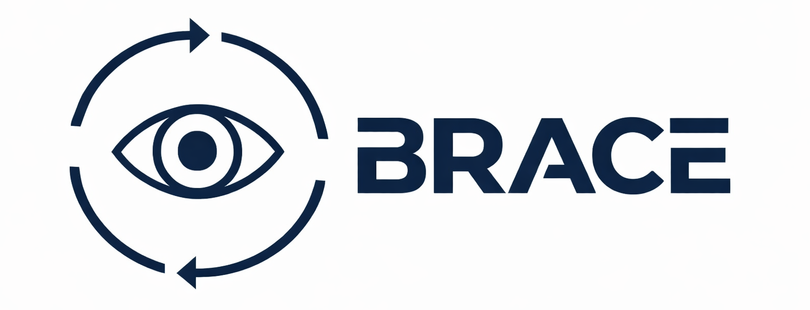
When Replanning Becomes the Bottleneck: Budgeted Replanning for Embodied Agents
Website: nebulis-lab.com/BRACE
Abstract
Embodied agents replan frequently to recover from execution drift, partial observability, and coordination hazards, but each LLM-based replanning call can consume an accumulated textual context that grows over time and across agents. Once this context becomes large, replanning latency develops heavy tails and can miss real-time deadlines even when task success remains high, a failure mode that is hard to detect from average latency or success alone. We present BRACE, a controller that formulates replanning as a budgeted control loop by deciding whether to replan, selecting a replanning mode, and allocating an explicit token budget and latency service-level objective (SLO) while accounting for optional efficiency modules.
As a reusable component, we introduce E-RECAP, a cost-aware progressive token pruning method that predicts token utility and prunes replanning contexts across transformer layers while preserving critical head and tail tokens. Across Meta Habitat, RoboFactory, and AirSim, BRACE with E-RECAP reduces replanning-call token counts by 62-92% and SLO violation rates from 85.5-100.0% to 4.7-50.0% in settings where task success is already saturated. In a harder RoboFactory setting where open-loop, frozen-plan, and No BRACE all fail, BRACE + E-RECAP reaches 80.0% success with 4.6% SLO violations, demonstrating that tail-aware per-call budgeting is effective across embodied platforms.
Overview
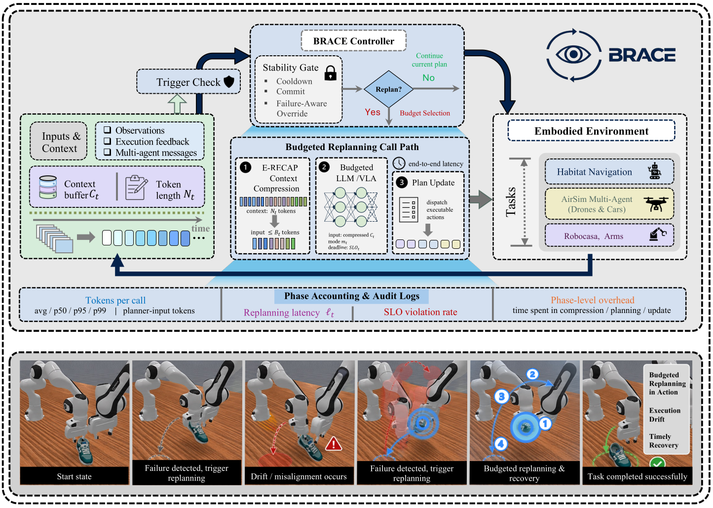
BRACE treats each potential replanning point as a controller decision. When a trigger fires, the controller decides whether to invoke replanning, selects the replanning mode, and assigns a planner-input token budget and latency SLO for the end-to-end call path.
- Admission: trigger evaluation plus cooldown and commit windows prevent rapid replanning churn.
- Budgeting: per-call token and latency budgets make planner cost explicit and comparable.
- Accounting: phase logs attribute tail events to compression, retrieval, planning, or execution dispatch.
Motivation
A replanning call is not a lightweight query: prompts include task specifications, recent histories, failure traces, and multi-agent coordination summaries. As the context grows, transformer planners become slow and bursty; in a closed loop, slow calls delay execution and can trigger more replanning.
In Meta Habitat navigation with shortest-path-noise execution and a replanning SLO of 2500 ms, No BRACE violates the SLO on 85.5% of replanning calls despite 100.0% success. With E-RECAP on the replanning call path, the violation rate drops to 4.7% without reducing success.
Figure 3. Qualitative motivating example on Meta Habitat. As replanning history accumulates, the context grows and produces tail-latency spikes, motivating budgeted context compression.
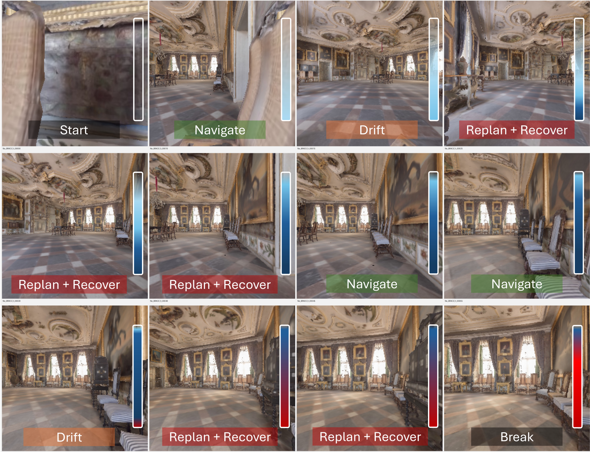
E-RECAP: Cost-Aware Progressive Pruning
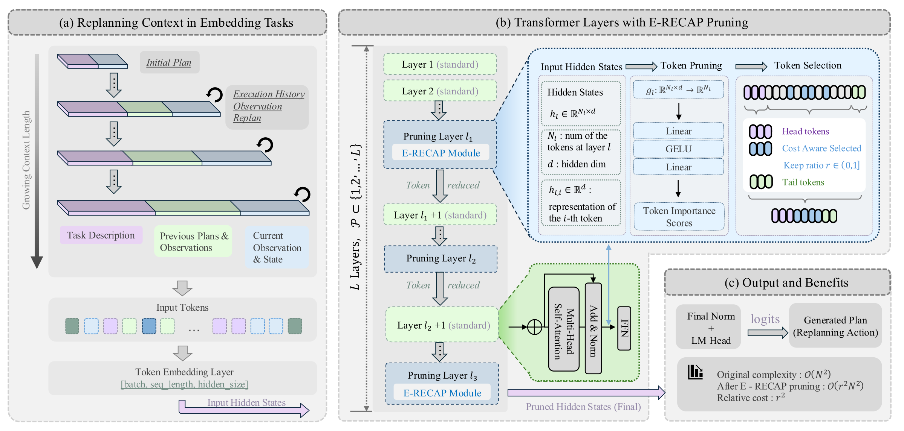
E-RECAP is a context-compression module for long-horizon replanning prompts. It predicts token utility from intermediate hidden states and prunes progressively across selected transformer layers.
It preserves fixed head and tail tokens, then fills the remaining budget with top-scoring context tokens so each replanning call satisfies the planner-input budget.
- Drop-in: operates on the replanning context before the planner call.
- Budget-aligned: enforces explicit token budgets after compression.
- Auditable: pruning overhead is logged as a separate call-path phase.
Figures
These figures mirror the paper's visual evidence: distribution-level SLO behavior, qualitative platform comparisons, a focused physical robot example, and diagnostic views of the cost-stability tradeoff.
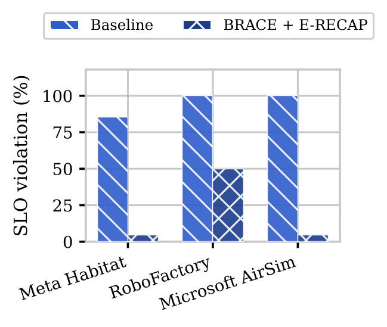
(a) Cross-platform SLO violation.
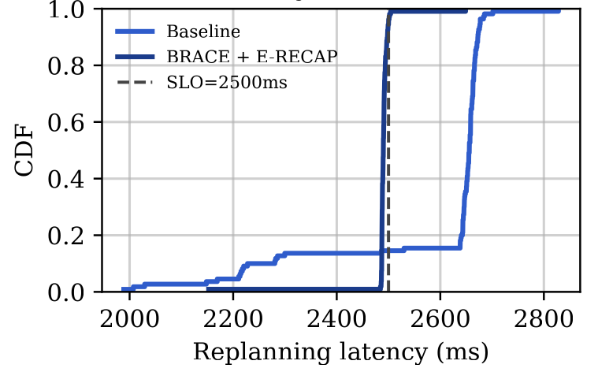
(b) Meta Habitat tail latency CDF.
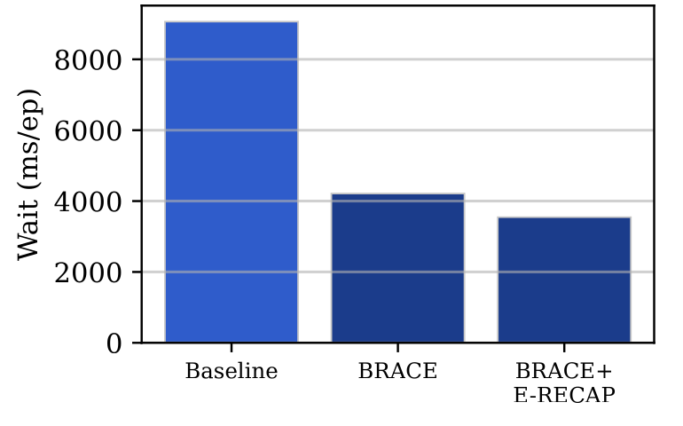
(c) RoboFactory coordination wait.
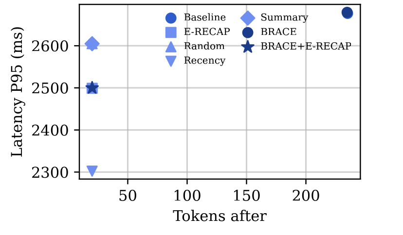
(d) Meta Habitat token-latency tradeoff.
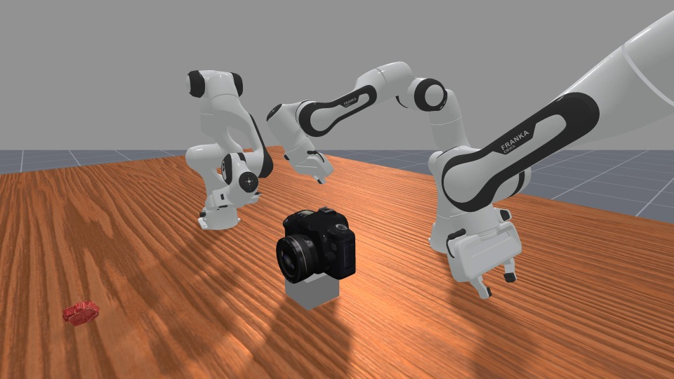
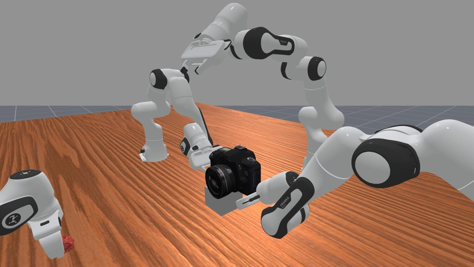
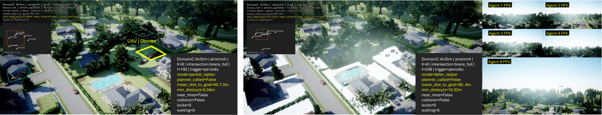
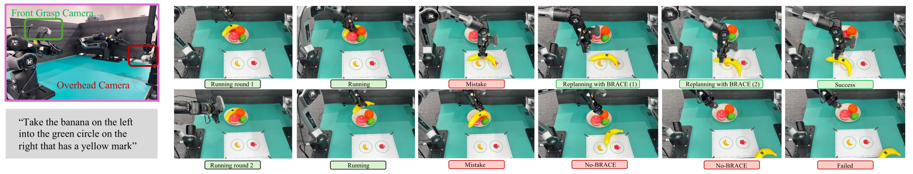
Results
Following the paper, the tables below keep the main evidence in full rather than only summarizing it as prose. The central pattern is that task success can saturate while replanning repeatedly misses real-time deadlines, so BRACE reports tail latency and SLO violations at replanning-call granularity.
| Platform | Scenario | Method | Ep | Success | Tokens | Lat P95 | SLO | SLO viol. |
|---|---|---|---|---|---|---|---|---|
| Meta Habitat | Navigation | No BRACE | 30 | 100.0% | 235 | 2,677 ms | 2,500 ms | 85.5% |
| Meta Habitat | Navigation | BRACE + E-RECAP | 30 | 100.0% | 20 | 2,500 ms | 2,500 ms | 4.7% |
| RoboFactory | Pass-Shoe manipulation | No BRACE | 10 | 100.0% | 1,566 | 1,604 ms | 250 ms | 100.0% |
| RoboFactory | Pass-Shoe manipulation | BRACE + E-RECAP | 10 | 100.0% | 319 | 1,213 ms | 250 ms | 50.0% |
| Microsoft AirSim | K=8 intersection | No BRACE | 10 | 100.0% | 2,934 | 8,520 ms | 2,500 ms | 100.0% |
| Microsoft AirSim | K=8 intersection | BRACE + E-RECAP | 10 | 100.0% | 1,114 | 1,640 ms | 2,500 ms | 4.7% |
| Task | K | Method | Keep Ratio | Success | SPL | Tokens/Replan | Latency | Speedup | Token Reduction |
|---|---|---|---|---|---|---|---|---|---|
| PointNav | 1 | No-Pruning | 1.0 | 0.85 | 0.72 | 2,847 | 2.34 s | 1.00x | 0% |
| PointNav | 1 | Random | 0.7 | 0.78 | 0.65 | 823 | 1.12 s | 2.09x | 71.1% |
| PointNav | 1 | E-RECAP | 0.7 | 0.84 | 0.71 | 823 | 1.12 s | 2.09x | 71.1% |
| PointNav | 4 | No-Pruning | 1.0 | 0.84 | 0.71 | 12,847 | 9.87 s | 1.00x | 0% |
| PointNav | 4 | Random | 0.7 | 0.65 | 0.57 | 3,421 | 4.23 s | 2.33x | 73.4% |
| PointNav | 4 | E-RECAP | 0.7 | 0.83 | 0.70 | 3,421 | 4.23 s | 2.33x | 73.4% |
| PointNav | 8 | No-Pruning | 1.0 | 0.80 | 0.67 | 38,924 | 29.67 s | 1.00x | 0% |
| PointNav | 8 | Random | 0.7 | 0.65 | 0.58 | 9,234 | 11.23 s | 2.64x | 76.3% |
| PointNav | 8 | E-RECAP | 0.7 | 0.79 | 0.66 | 9,234 | 11.23 s | 2.64x | 76.3% |
| Domain | Method | Task metric | Cost metric | Lat P95 | SLO viol. |
|---|---|---|---|---|---|
| Habitat | No-initial-plan | 53.3% / 0.519 SPL | 0 replans | N/A | N/A |
| Habitat | No BRACE | 53.3% / 0.515 SPL | 4.533 replans/ep | 5,492 ms | 93.4% |
| Habitat | BRACE + E-RECAP | 53.3% / 0.519 SPL | 4.533 replans/ep | 2,486 ms | 0.0% |
| RoboFactory | Open-loop | 0.0% success | 0 wait | N/A | N/A |
| RoboFactory | Frozen plan | 0.0% success | 55.6 ms wait | 72.8 ms | 0.0% |
| RoboFactory | No BRACE | 0.0% success | 6,607.3 ms wait | 312.7 ms | 27.6% |
| RoboFactory | BRACE + E-RECAP | 80.0% success | 6,241.7 ms wait | 247.2 ms | 4.6% |
| Task | Method | Success Rate | Replans/Ep | P95 Replan | SLO Viol. |
|---|---|---|---|---|---|
| PickFruit | One-Shot | 8.0% | 0.0 | N/A | N/A |
| PickFruit | No BRACE | 24.0% | 3.4 | 29.4 s | 42.7% |
| PickFruit | BRACE + E-RECAP | 40.0% | 1.9 | 22.8 s | 18.6% |
| PushT | One-Shot | 0.0% | 0.0 | N/A | N/A |
| PushT | No BRACE | 12.0% | 3.8 | 34.7 s | 61.3% |
| PushT | BRACE + E-RECAP | 32.0% | 2.2 | 26.1 s | 27.5% |
Reproducibility
Start from the repository root:
python -m venv .venv
source .venv/bin/activate
pip install -r requirements.txt
# smoke entrypoints (require local domain dependencies)
scripts/smoke_all.sh
See docs/README.md for environment variables, run scripts, and postprocessing into markdown tables.